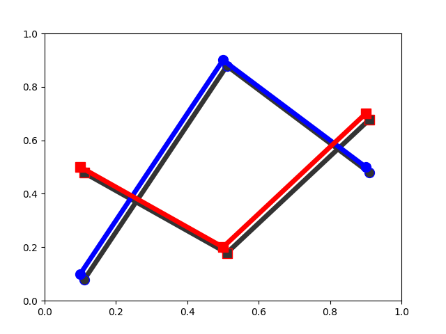

Note
Click here to download the full example code
SVG Filter Line¶
Demonstrate SVG filtering effects which might be used with mpl.
Note that the filtering effects are only effective if your svg renderer support it.
Out:
Saving 'svg_filter_line.svg'
import matplotlib.pyplot as plt
import matplotlib.transforms as mtransforms
fig1 = plt.figure()
ax = fig1.add_axes([0.1, 0.1, 0.8, 0.8])
# draw lines
l1, = ax.plot([0.1, 0.5, 0.9], [0.1, 0.9, 0.5], "bo-",
mec="b", lw=5, ms=10, label="Line 1")
l2, = ax.plot([0.1, 0.5, 0.9], [0.5, 0.2, 0.7], "rs-",
mec="r", lw=5, ms=10, color="r", label="Line 2")
for l in [l1, l2]:
# draw shadows with same lines with slight offset and gray colors.
xx = l.get_xdata()
yy = l.get_ydata()
shadow, = ax.plot(xx, yy)
shadow.update_from(l)
# adjust color
shadow.set_color("0.2")
# adjust zorder of the shadow lines so that it is drawn below the
# original lines
shadow.set_zorder(l.get_zorder() - 0.5)
# offset transform
ot = mtransforms.offset_copy(l.get_transform(), fig1,
x=4.0, y=-6.0, units='points')
shadow.set_transform(ot)
# set the id for a later use
shadow.set_gid(l.get_label() + "_shadow")
ax.set_xlim(0., 1.)
ax.set_ylim(0., 1.)
# save the figure as a bytes string in the svg format.
from io import BytesIO
f = BytesIO()
plt.savefig(f, format="svg")
import xml.etree.ElementTree as ET
# filter definition for a gaussian blur
filter_def = """
<defs xmlns='http://www.w3.org/2000/svg'
xmlns:xlink='http://www.w3.org/1999/xlink'>
<filter id='dropshadow' height='1.2' width='1.2'>
<feGaussianBlur result='blur' stdDeviation='3'/>
</filter>
</defs>
"""
# read in the saved svg
tree, xmlid = ET.XMLID(f.getvalue())
# insert the filter definition in the svg dom tree.
tree.insert(0, ET.XML(filter_def))
for l in [l1, l2]:
# pick up the svg element with given id
shadow = xmlid[l.get_label() + "_shadow"]
# apply shadow filter
shadow.set("filter", 'url(#dropshadow)')
fn = "svg_filter_line.svg"
print("Saving '%s'" % fn)
ET.ElementTree(tree).write(fn)
Keywords: matplotlib code example, codex, python plot, pyplot Gallery generated by Sphinx-Gallery